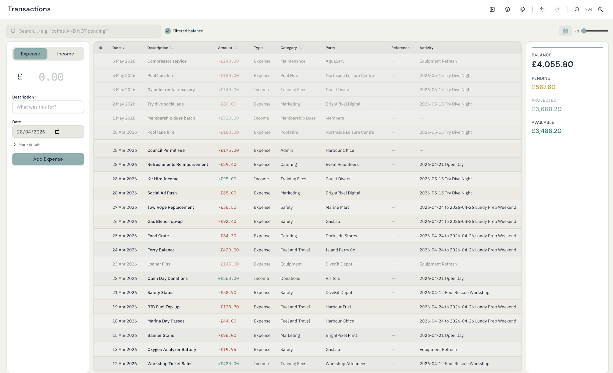

Shared folder
One place every device can reach
Use a folder that all participating devices can read and write, such as a shared cloud drive or a network share you already trust.
Fidra / Local Sync guide
Local Sync lets every device keep its own local Fidra database while the app exchanges encrypted update bundles through a shared folder. In practical terms, the folder acts like a mailbox for updates. Nobody works directly on the same SQLite file.
Needs
A shared folder that every device can read and write.
Best fit
Small clubs that want team editing without provisioning Postgres.
Storage model
Each device keeps its own local ledger and imports updates from the folder.
Security
Bundles are encrypted before they leave the device.

Local Sync does not change the day-to-day interface. It changes how updates travel between devices.
Local Sync is deliberately light on infrastructure, but it still works better if one person sets the initial shape of the group properly.
Shared folder
Use a folder that all participating devices can read and write, such as a shared cloud drive or a network share you already trust.
Passphrase
This passphrase protects sync bundles in the shared folder. It is part of the setup, not something members need to retype every day once their accounts exist.
First admin
The first device creates the first admin account. That person can then invite other members and manage roles if you want access control enabled.
Separate files
Every machine keeps its own local .fdra file. The folder carries
updates between them; it is not a place where everyone opens the same file.
There are really two workflows: start the group on one device, then let the rest join from the latest snapshot.
This is the device that defines the shared folder, the sync passphrase, and the first admin account.
Use the Local Sync setup flow rather than putting the database itself in a shared folder.
Fidra validates the folder, stores the sync settings for that device, and prepares the sync structure.
The first admin account is tied to the sync group and can invite other people later.
Invite codes make member onboarding cleaner, and a snapshot gives new devices a fast starting point.
New devices join the existing group and receive the current data into a fresh local database file.
This flow is designed for a device that does not already own the shared history.
Fidra reads the latest snapshot and any newer bundles from that location.
Invite-code onboarding also lets the joiner set their own password as part of the process.
The resulting file lives locally on that device and then stays in sync with the group going forward.
Local Sync treats the shared folder as a secure exchange point for updates. The live working copy stays on each device.
Your device writes the change into its own SQLite database first, so the app stays responsive and usable offline.
Changed rows are bundled into compact sync files, and those files are encrypted before they are written to the shared folder.
Other devices watch that folder, notice new bundles, and import them when they appear.
Incoming changes are applied to the local database, and anything sensitive enough to need a human decision is queued for review.
Local Sync bundles are encrypted with AES-256-GCM. Once your team has local accounts, the passphrase can be wrapped into each member account so people sign in normally instead of carrying the raw sync secret around.
Fidra can create full-state snapshots. New devices bootstrap from the latest snapshot and then replay newer bundles, which is much faster than replaying the entire history from scratch.
Most edits merge quietly. The important part is what happens when they should not.
If two devices touch a critical field in incompatible ways, Fidra surfaces that for review instead of silently choosing a winner where the user would care.
Local Sync can stay simple, but it also supports admin and member roles if the group wants more controlled access than a shared passphrase alone.
If your club already has a Postgres setup or wants live server-backed sync, the Cloud Connect guide is the better next read.